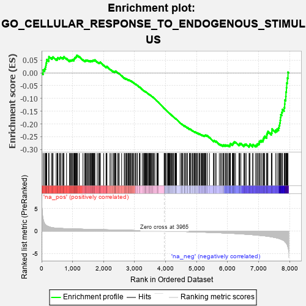
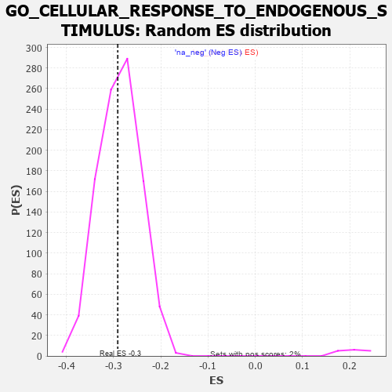

| | | Dataset | 7d |
| Phenotype | NoPhenotypeAvailable |
| Upregulated in class | na_neg |
| GeneSet | GO_CELLULAR_RESPONSE_TO_ENDOGENOUS_STIMULUS |
| Enrichment Score (ES) | -0.29116154 |
| Normalized Enrichment Score (NES) | -1.0142105 |
| Nominal p-value | 0.4512195 |
| FDR q-value | 0.85486615 |
| FWER p-Value | 1.0 |
Table: GSEA Results Summary

Fig 1: Enrichment plot: GO_CELLULAR_RESPONSE_TO_ENDOGENOUS_STIMULUS
Profile of the Running ES Score & Positions of GeneSet Members on the Rank Ordered List
| PROBE | GENE SYMBOL | GENE_TITLE | RANK IN GENE LIST | RANK METRIC SCORE | RUNNING ES | CORE ENRICHMENT | | 1 | TGFB3 | | | 49 | 2.654 | 0.0119 | No |
| 2 | IRS1 | | | 98 | 1.659 | 0.0170 | No |
| 3 | ADCY8 | | | 124 | 1.418 | 0.0235 | No |
| 4 | HTRA4 | | | 137 | 1.341 | 0.0311 | No |
| 5 | CASP6 | | | 145 | 1.300 | 0.0392 | No |
| 6 | CSRP3 | | | 161 | 1.186 | 0.0454 | No |
| 7 | AXIN1 | | | 166 | 1.159 | 0.0528 | No |
| 8 | UFSP2 | | | 230 | 0.981 | 0.0513 | No |
| 9 | SMAD5 | | | 231 | 0.979 | 0.0581 | No |
| 10 | SFR1 | | | 235 | 0.969 | 0.0643 | No |
| 11 | KLF11 | | | 318 | 0.788 | 0.0591 | No |
| 12 | GSK3A | | | 351 | 0.745 | 0.0600 | No |
| 13 | RGMB | | | 368 | 0.732 | 0.0630 | No |
| 14 | LRP1 | | | 470 | 0.648 | 0.0543 | No |
| 15 | MYOD1 | | | 504 | 0.628 | 0.0543 | No |
| 16 | CNOT2 | | | 514 | 0.625 | 0.0574 | No |
| 17 | RWDD1 | | | 526 | 0.621 | 0.0602 | No |
| 18 | APEX1 | | | 577 | 0.604 | 0.0579 | No |
| 19 | PITX3 | | | 594 | 0.596 | 0.0599 | No |
| 20 | MCM7 | | | 612 | 0.591 | 0.0617 | No |
| 21 | HES5 | | | 661 | 0.571 | 0.0594 | No |
| 22 | FST | | | 698 | 0.560 | 0.0586 | No |
| 23 | CDC6 | | | 709 | 0.557 | 0.0611 | No |
| 24 | ID1 | | | 719 | 0.555 | 0.0637 | No |
| 25 | BLM | | | 804 | 0.531 | 0.0564 | No |
| 26 | HDAC5 | | | 900 | 0.506 | 0.0475 | No |
| 27 | NLK | | | 911 | 0.504 | 0.0497 | No |
| 28 | PDCD4 | | | 941 | 0.497 | 0.0493 | No |
| 29 | ZPR1 | | | 967 | 0.491 | 0.0495 | No |
| 30 | UBA5 | | | 982 | 0.488 | 0.0510 | No |
| 31 | MEN1 | | | 1003 | 0.483 | 0.0517 | No |
| 32 | AKT1 | | | 1040 | 0.476 | 0.0503 | No |
| 33 | YAP1 | | | 1041 | 0.475 | 0.0535 | No |
| 34 | MEF2C | | | 1054 | 0.473 | 0.0552 | No |
| 35 | AP3S1 | | | 1063 | 0.471 | 0.0574 | No |
| 36 | AIFM1 | | | 1072 | 0.469 | 0.0596 | No |
| 37 | RAD51 | | | 1090 | 0.466 | 0.0606 | No |
| 38 | BRD8 | | | 1101 | 0.463 | 0.0625 | No |
| 39 | G6PC | | | 1121 | 0.459 | 0.0632 | No |
| 40 | SRC | | | 1128 | 0.459 | 0.0655 | No |
| 41 | FIBP | | | 1129 | 0.458 | 0.0687 | No |
| 42 | GAB1 | | | 1158 | 0.453 | 0.0681 | No |
| 43 | KCTD6 | | | 1213 | 0.444 | 0.0642 | No |
| 44 | UBR2 | | | 1334 | 0.423 | 0.0514 | No |
| 45 | FKBP4 | | | 1390 | 0.412 | 0.0471 | No |
| 46 | CARM1 | | | 1413 | 0.408 | 0.0470 | No |
| 47 | P2RY1 | | | 1416 | 0.407 | 0.0496 | No |
| 48 | PTBP1 | | | 1441 | 0.402 | 0.0492 | No |
| 49 | VASN | | | 1459 | 0.398 | 0.0497 | No |
| 50 | GPT | | | 1488 | 0.392 | 0.0488 | No |
| 51 | INHBB | | | 1514 | 0.388 | 0.0482 | No |
| 52 | SOS1 | | | 1547 | 0.384 | 0.0467 | No |
| 53 | FZD1 | | | 1574 | 0.379 | 0.0459 | No |
| 54 | TADA3 | | | 1580 | 0.378 | 0.0478 | No |
| 55 | RNF6 | | | 1605 | 0.373 | 0.0473 | No |
| 56 | CDK4 | | | 1626 | 0.370 | 0.0472 | No |
| 57 | RXRA | | | 1647 | 0.365 | 0.0471 | No |
| 58 | ESRP1 | | | 1653 | 0.364 | 0.0489 | No |
| 59 | BACE1 | | | 1673 | 0.360 | 0.0489 | No |
| 60 | WWOX | | | 1688 | 0.359 | 0.0496 | No |
| 61 | PLOD3 | | | 1715 | 0.353 | 0.0486 | No |
| 62 | KDM5D | | | 1716 | 0.353 | 0.0511 | No |
| 63 | STRAP | | | 1793 | 0.339 | 0.0435 | No |
| 64 | GATA4 | | | 1837 | 0.330 | 0.0402 | No |
| 65 | SMAD4 | | | 1860 | 0.326 | 0.0395 | No |
| 66 | NEO1 | | | 1879 | 0.323 | 0.0394 | No |
| 67 | NCOA5 | | | 1884 | 0.322 | 0.0411 | No |
| 68 | GLRA2 | | | 1892 | 0.321 | 0.0424 | No |
| 69 | FOXO4 | | | 2004 | 0.304 | 0.0300 | No |
| 70 | KDM3A | | | 2078 | 0.294 | 0.0225 | No |
| 71 | TAF7 | | | 2092 | 0.292 | 0.0228 | No |
| 72 | FOXD1 | | | 2093 | 0.292 | 0.0248 | No |
| 73 | BMP7 | | | 2107 | 0.290 | 0.0251 | No |
| 74 | C2CD5 | | | 2204 | 0.276 | 0.0145 | No |
| 75 | CREB1 | | | 2243 | 0.269 | 0.0114 | No |
| 76 | WASF1 | | | 2303 | 0.259 | 0.0055 | No |
| 77 | REST | | | 2308 | 0.259 | 0.0068 | No |
| 78 | BCAS3 | | | 2352 | 0.253 | 0.0029 | No |
| 79 | CDC5L | | | 2353 | 0.253 | 0.0047 | No |
| 80 | SIN3A | | | 2361 | 0.251 | 0.0055 | No |
| 81 | NCBP2 | | | 2383 | 0.248 | 0.0044 | No |
| 82 | PELO | | | 2386 | 0.247 | 0.0059 | No |
| 83 | HIPK2 | | | 2389 | 0.247 | 0.0073 | No |
| 84 | KDM1A | | | 2447 | 0.237 | 0.0015 | No |
| 85 | FRS3 | | | 2482 | 0.229 | -0.0013 | No |
| 86 | KAT2B | | | 2502 | 0.226 | -0.0023 | No |
| 87 | PIAS2 | | | 2581 | 0.215 | -0.0109 | No |
| 88 | GRB14 | | | 2666 | 0.204 | -0.0205 | No |
| 89 | MUS81 | | | 2673 | 0.202 | -0.0199 | No |
| 90 | PHB2 | | | 2712 | 0.197 | -0.0235 | No |
| 91 | HAS1 | | | 2722 | 0.195 | -0.0233 | No |
| 92 | SLIT2 | | | 2724 | 0.195 | -0.0221 | No |
| 93 | FNTA | | | 2755 | 0.190 | -0.0247 | No |
| 94 | XRN1 | | | 2786 | 0.185 | -0.0273 | No |
| 95 | FER | | | 2803 | 0.183 | -0.0281 | No |
| 96 | SYAP1 | | | 2811 | 0.182 | -0.0278 | No |
| 97 | PCK2 | | | 2823 | 0.180 | -0.0280 | No |
| 98 | NR2E1 | | | 2844 | 0.177 | -0.0294 | No |
| 99 | WDTC1 | | | 2865 | 0.172 | -0.0308 | No |
| 100 | PDCD5 | | | 2885 | 0.169 | -0.0321 | No |
| 101 | FGFR2 | | | 2895 | 0.167 | -0.0322 | No |
| 102 | ACVR1 | | | 2932 | 0.161 | -0.0357 | No |
| 103 | RAB10 | | | 2952 | 0.157 | -0.0371 | No |
| 104 | ANO1 | | | 2982 | 0.152 | -0.0399 | No |
| 105 | WNT4 | | | 3023 | 0.146 | -0.0441 | No |
| 106 | LEF1 | | | 3037 | 0.144 | -0.0448 | No |
| 107 | UFL1 | | | 3041 | 0.144 | -0.0442 | No |
| 108 | HDAC1 | | | 3086 | 0.138 | -0.0490 | No |
| 109 | TIGAR | | | 3091 | 0.138 | -0.0485 | No |
| 110 | SFRP5 | | | 3154 | 0.129 | -0.0557 | No |
| 111 | GCNT2 | | | 3162 | 0.128 | -0.0558 | No |
| 112 | AHR | | | 3175 | 0.126 | -0.0565 | No |
| 113 | EME1 | | | 3246 | 0.114 | -0.0648 | No |
| 114 | TRIP4 | | | 3290 | 0.107 | -0.0697 | No |
| 115 | SMAD3 | | | 3303 | 0.105 | -0.0705 | No |
| 116 | RAB8A | | | 3319 | 0.102 | -0.0718 | No |
| 117 | SMAD1 | | | 3337 | 0.099 | -0.0733 | No |
| 118 | UBE2O | | | 3348 | 0.097 | -0.0739 | No |
| 119 | TAB1 | | | 3351 | 0.097 | -0.0735 | No |
| 120 | SMAD7 | | | 3369 | 0.093 | -0.0751 | No |
| 121 | PPAT | | | 3382 | 0.091 | -0.0760 | No |
| 122 | MED1 | | | 3405 | 0.089 | -0.0783 | No |
| 123 | RXRG | | | 3435 | 0.085 | -0.0815 | No |
| 124 | PTPRK | | | 3454 | 0.084 | -0.0832 | No |
| 125 | CNOT1 | | | 3473 | 0.081 | -0.0850 | No |
| 126 | CDK5 | | | 3480 | 0.080 | -0.0853 | No |
| 127 | RGS8 | | | 3490 | 0.079 | -0.0859 | No |
| 128 | UFM1 | | | 3506 | 0.077 | -0.0873 | No |
| 129 | UBR5 | | | 3518 | 0.074 | -0.0882 | No |
| 130 | PIN1 | | | 3543 | 0.069 | -0.0909 | No |
| 131 | FUT8 | | | 3551 | 0.067 | -0.0913 | No |
| 132 | PARD3 | | | 3584 | 0.063 | -0.0951 | No |
| 133 | TNS2 | | | 3588 | 0.062 | -0.0950 | No |
| 134 | MAPK3 | | | 3589 | 0.062 | -0.0946 | No |
| 135 | CBL | | | 3621 | 0.056 | -0.0983 | No |
| 136 | FIS1 | | | 3654 | 0.051 | -0.1021 | No |
| 137 | HSF1 | | | 3718 | 0.039 | -0.1100 | No |
| 138 | DAXX | | | 3722 | 0.038 | -0.1102 | No |
| 139 | HTR1B | | | 3745 | 0.035 | -0.1128 | No |
| 140 | LPIN3 | | | 3751 | 0.034 | -0.1132 | No |
| 141 | SKI | | | 3762 | 0.032 | -0.1143 | No |
| 142 | PPM1A | | | 3953 | 0.002 | -0.1390 | No |
| 143 | GLRA1 | | | 3957 | 0.001 | -0.1394 | No |
| 144 | NCOR1 | | | 3961 | 0.000 | -0.1398 | No |
| 145 | IGF1R | | | 3970 | -0.002 | -0.1408 | No |
| 146 | VPS35 | | | 3989 | -0.006 | -0.1431 | No |
| 147 | RNF14 | | | 4013 | -0.010 | -0.1461 | No |
| 148 | PARP1 | | | 4014 | -0.010 | -0.1460 | No |
| 149 | SFRP2 | | | 4065 | -0.018 | -0.1524 | No |
| 150 | ROBO2 | | | 4066 | -0.018 | -0.1523 | No |
| 151 | WNT2 | | | 4084 | -0.021 | -0.1543 | No |
| 152 | PDE4B | | | 4089 | -0.022 | -0.1547 | No |
| 153 | PDE8A | | | 4097 | -0.023 | -0.1554 | No |
| 154 | MTOR | | | 4114 | -0.025 | -0.1574 | No |
| 155 | ABL1 | | | 4125 | -0.027 | -0.1585 | No |
| 156 | CRK | | | 4139 | -0.031 | -0.1600 | No |
| 157 | DDX17 | | | 4161 | -0.035 | -0.1624 | No |
| 158 | RRAGD | | | 4183 | -0.039 | -0.1649 | No |
| 159 | SESN1 | | | 4192 | -0.041 | -0.1657 | No |
| 160 | RRAGA | | | 4223 | -0.046 | -0.1693 | No |
| 161 | GPC1 | | | 4238 | -0.048 | -0.1708 | No |
| 162 | RPTOR | | | 4252 | -0.050 | -0.1721 | No |
| 163 | USF1 | | | 4296 | -0.059 | -0.1773 | No |
| 164 | BAG4 | | | 4314 | -0.061 | -0.1791 | No |
| 165 | TSHR | | | 4322 | -0.063 | -0.1796 | No |
| 166 | CD109 | | | 4325 | -0.064 | -0.1794 | No |
| 167 | OPA1 | | | 4330 | -0.065 | -0.1795 | No |
| 168 | ADRB2 | | | 4352 | -0.068 | -0.1817 | No |
| 169 | LRRK2 | | | 4467 | -0.087 | -0.1960 | No |
| 170 | ILK | | | 4510 | -0.096 | -0.2008 | No |
| 171 | SNW1 | | | 4514 | -0.096 | -0.2005 | No |
| 172 | NPTN | | | 4519 | -0.098 | -0.2004 | No |
| 173 | NTRK2 | | | 4543 | -0.104 | -0.2026 | No |
| 174 | APC | | | 4558 | -0.107 | -0.2037 | No |
| 175 | SNX25 | | | 4606 | -0.119 | -0.2090 | No |
| 176 | SMC1A | | | 4609 | -0.120 | -0.2085 | No |
| 177 | ADTRP | | | 4612 | -0.120 | -0.2079 | No |
| 178 | GATA3 | | | 4614 | -0.120 | -0.2072 | No |
| 179 | FGFR3 | | | 4656 | -0.129 | -0.2117 | No |
| 180 | ARPC3 | | | 4659 | -0.129 | -0.2110 | No |
| 181 | ARF6 | | | 4704 | -0.140 | -0.2158 | No |
| 182 | RAP1B | | | 4706 | -0.140 | -0.2150 | No |
| 183 | CPEB2 | | | 4709 | -0.141 | -0.2143 | No |
| 184 | PLCG1 | | | 4770 | -0.151 | -0.2211 | No |
| 185 | WBP2 | | | 4780 | -0.153 | -0.2212 | No |
| 186 | RAB14 | | | 4784 | -0.155 | -0.2205 | No |
| 187 | MYO5A | | | 4787 | -0.155 | -0.2197 | No |
| 188 | P2RX4 | | | 4813 | -0.161 | -0.2218 | No |
| 189 | USO1 | | | 4855 | -0.168 | -0.2260 | No |
| 190 | SIK2 | | | 4875 | -0.172 | -0.2273 | No |
| 191 | SLIT3 | | | 4890 | -0.175 | -0.2279 | No |
| 192 | CBX3 | | | 4923 | -0.183 | -0.2309 | No |
| 193 | EP300 | | | 4941 | -0.186 | -0.2318 | No |
| 194 | CHMP5 | | | 4952 | -0.188 | -0.2318 | No |
| 195 | PRKDC | | | 4955 | -0.189 | -0.2308 | No |
| 196 | AOC1 | | | 4993 | -0.197 | -0.2342 | No |
| 197 | KLF4 | | | 5005 | -0.198 | -0.2343 | No |
| 198 | CASP7 | | | 5038 | -0.206 | -0.2370 | No |
| 199 | PDPK1 | | | 5043 | -0.207 | -0.2361 | No |
| 200 | DRD2 | | | 5088 | -0.221 | -0.2404 | No |
| 201 | DDX54 | | | 5093 | -0.222 | -0.2393 | No |
| 202 | DDX11 | | | 5102 | -0.225 | -0.2388 | No |
| 203 | FLCN | | | 5140 | -0.235 | -0.2421 | No |
| 204 | TBX1 | | | 5166 | -0.241 | -0.2437 | No |
| 205 | HDAC6 | | | 5183 | -0.244 | -0.2441 | No |
| 206 | IPO5 | | | 5207 | -0.248 | -0.2454 | No |
| 207 | TMF1 | | | 5225 | -0.251 | -0.2458 | No |
| 208 | IDE | | | 5252 | -0.258 | -0.2475 | No |
| 209 | SSH1 | | | 5254 | -0.258 | -0.2458 | No |
| 210 | PTEN | | | 5262 | -0.261 | -0.2449 | No |
| 211 | EPHA4 | | | 5273 | -0.265 | -0.2444 | No |
| 212 | MAGI2 | | | 5295 | -0.269 | -0.2453 | No |
| 213 | FKBP8 | | | 5296 | -0.270 | -0.2434 | No |
| 214 | TCF21 | | | 5340 | -0.283 | -0.2471 | No |
| 215 | LMO3 | | | 5342 | -0.283 | -0.2453 | No |
| 216 | LATS1 | | | 5412 | -0.298 | -0.2522 | No |
| 217 | FGFR1 | | | 5543 | -0.332 | -0.2669 | No |
| 218 | EHD1 | | | 5560 | -0.336 | -0.2667 | No |
| 219 | FOLR2 | | | 5563 | -0.336 | -0.2646 | No |
| 220 | LARP1 | | | 5616 | -0.349 | -0.2690 | No |
| 221 | ROR2 | | | 5626 | -0.353 | -0.2677 | No |
| 222 | TIA1 | | | 5731 | -0.386 | -0.2786 | No |
| 223 | CIB2 | | | 5774 | -0.398 | -0.2814 | No |
| 224 | BBS4 | | | 5806 | -0.407 | -0.2826 | No |
| 225 | STRN3 | | | 5849 | -0.417 | -0.2852 | No |
| 226 | ATG7 | | | 5858 | -0.420 | -0.2834 | No |
| 227 | RAB13 | | | 5870 | -0.425 | -0.2819 | No |
| 228 | KCNQ1 | | | 5918 | -0.441 | -0.2850 | No |
| 229 | STK11 | | | 5922 | -0.443 | -0.2823 | No |
| 230 | ACTN2 | | | 5960 | -0.458 | -0.2840 | No |
| 231 | GABPA | | | 5977 | -0.464 | -0.2829 | No |
| 232 | XBP1 | | | 6011 | -0.475 | -0.2839 | No |
| 233 | NR2E3 | | | 6048 | -0.488 | -0.2852 | No |
| 234 | USP9Y | | | 6075 | -0.498 | -0.2852 | No |
| 235 | CALR | | | 6077 | -0.499 | -0.2819 | No |
| 236 | FBN1 | | | 6080 | -0.499 | -0.2787 | No |
| 237 | UBB | | | 6090 | -0.503 | -0.2765 | No |
| 238 | ROCK1 | | | 6152 | -0.520 | -0.2808 | No |
| 239 | EGR1 | | | 6165 | -0.527 | -0.2788 | No |
| 240 | THRB | | | 6178 | -0.531 | -0.2767 | No |
| 241 | KLF2 | | | 6182 | -0.532 | -0.2734 | No |
| 242 | INSR | | | 6204 | -0.538 | -0.2725 | No |
| 243 | SMAD2 | | | 6216 | -0.541 | -0.2702 | No |
| 244 | TFAP4 | | | 6254 | -0.556 | -0.2712 | No |
| 245 | NPC1 | | | 6364 | -0.602 | -0.2812 | No |
| 246 | BBS2 | | | 6383 | -0.608 | -0.2794 | No |
| 247 | TRPM4 | | | 6390 | -0.612 | -0.2760 | No |
| 248 | CSK | | | 6428 | -0.630 | -0.2765 | No |
| 249 | VAMP2 | | | 6525 | -0.672 | -0.2844 | No |
| 250 | KANK1 | | | 6536 | -0.678 | -0.2810 | No |
| 251 | OTOP1 | | | 6562 | -0.690 | -0.2795 | No |
| 252 | LTBP2 | | | 6600 | -0.712 | -0.2794 | No |
| 253 | PAK1 | | | 6691 | -0.757 | -0.2860 | Yes |
| 254 | EGFR | | | 6708 | -0.765 | -0.2828 | Yes |
| 255 | GSK3B | | | 6719 | -0.768 | -0.2788 | Yes |
| 256 | ADAM9 | | | 6808 | -0.819 | -0.2847 | Yes |
| 257 | GIPC1 | | | 6819 | -0.826 | -0.2803 | Yes |
| 258 | HCN1 | | | 6895 | -0.865 | -0.2841 | Yes |
| 259 | GHSR | | | 6937 | -0.894 | -0.2833 | Yes |
| 260 | FAT4 | | | 6948 | -0.901 | -0.2784 | Yes |
| 261 | PDE2A | | | 6985 | -0.927 | -0.2767 | Yes |
| 262 | DDC | | | 7019 | -0.950 | -0.2745 | Yes |
| 263 | NR4A1 | | | 7022 | -0.951 | -0.2682 | Yes |
| 264 | GRM5 | | | 7053 | -0.969 | -0.2655 | Yes |
| 265 | CSH1 | | | 7098 | -0.995 | -0.2644 | Yes |
| 266 | CFTR | | | 7143 | -1.030 | -0.2630 | Yes |
| 267 | DDX5 | | | 7152 | -1.037 | -0.2569 | Yes |
| 268 | AR | | | 7169 | -1.046 | -0.2518 | Yes |
| 269 | OVOL2 | | | 7197 | -1.068 | -0.2480 | Yes |
| 270 | HCN4 | | | 7260 | -1.134 | -0.2483 | Yes |
| 271 | PLPP1 | | | 7262 | -1.135 | -0.2406 | Yes |
| 272 | CIB1 | | | 7280 | -1.152 | -0.2349 | Yes |
| 273 | MSX2 | | | 7299 | -1.171 | -0.2292 | Yes |
| 274 | UBC | | | 7410 | -1.274 | -0.2348 | Yes |
| 275 | KLF5 | | | 7429 | -1.304 | -0.2282 | Yes |
| 276 | LHX1 | | | 7431 | -1.305 | -0.2193 | Yes |
| 277 | SHOC2 | | | 7546 | -1.463 | -0.2241 | Yes |
| 278 | ASNS | | | 7595 | -1.547 | -0.2198 | Yes |
| 279 | TAF1 | | | 7643 | -1.633 | -0.2146 | Yes |
| 280 | HCN2 | | | 7662 | -1.668 | -0.2055 | Yes |
| 281 | TRPM2 | | | 7680 | -1.712 | -0.1960 | Yes |
| 282 | ADCY1 | | | 7695 | -1.752 | -0.1858 | Yes |
| 283 | ADCY9 | | | 7704 | -1.783 | -0.1746 | Yes |
| 284 | GNRHR | | | 7714 | -1.811 | -0.1633 | Yes |
| 285 | CASP3 | | | 7747 | -1.902 | -0.1544 | Yes |
| 286 | PDE4D | | | 7764 | -1.944 | -0.1431 | Yes |
| 287 | PKD2 | | | 7822 | -2.167 | -0.1356 | Yes |
| 288 | SP1 | | | 7840 | -2.321 | -0.1219 | Yes |
| 289 | DLX5 | | | 7845 | -2.378 | -0.1061 | Yes |
| 290 | MMP2 | | | 7875 | -2.574 | -0.0922 | Yes |
| 291 | FYN | | | 7881 | -2.622 | -0.0748 | Yes |
| 292 | CAV3 | | | 7896 | -2.739 | -0.0578 | Yes |
| 293 | FBN2 | | | 7906 | -2.873 | -0.0392 | Yes |
| 294 | VWA2 | | | 7927 | -3.205 | -0.0198 | Yes |
| 295 | XIAP | | | 7947 | -3.696 | 0.0031 | Yes |
Table: GSEA details [plain text format]

Fig 2: GO_CELLULAR_RESPONSE_TO_ENDOGENOUS_STIMULUS: Random ES distribution
Gene set null distribution of ES for GO_CELLULAR_RESPONSE_TO_ENDOGENOUS_STIMULUS